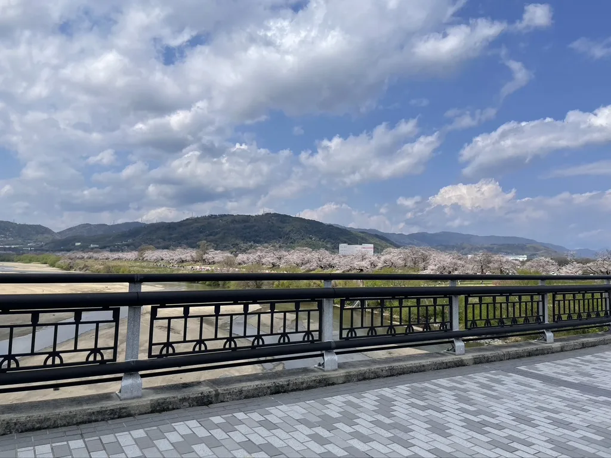
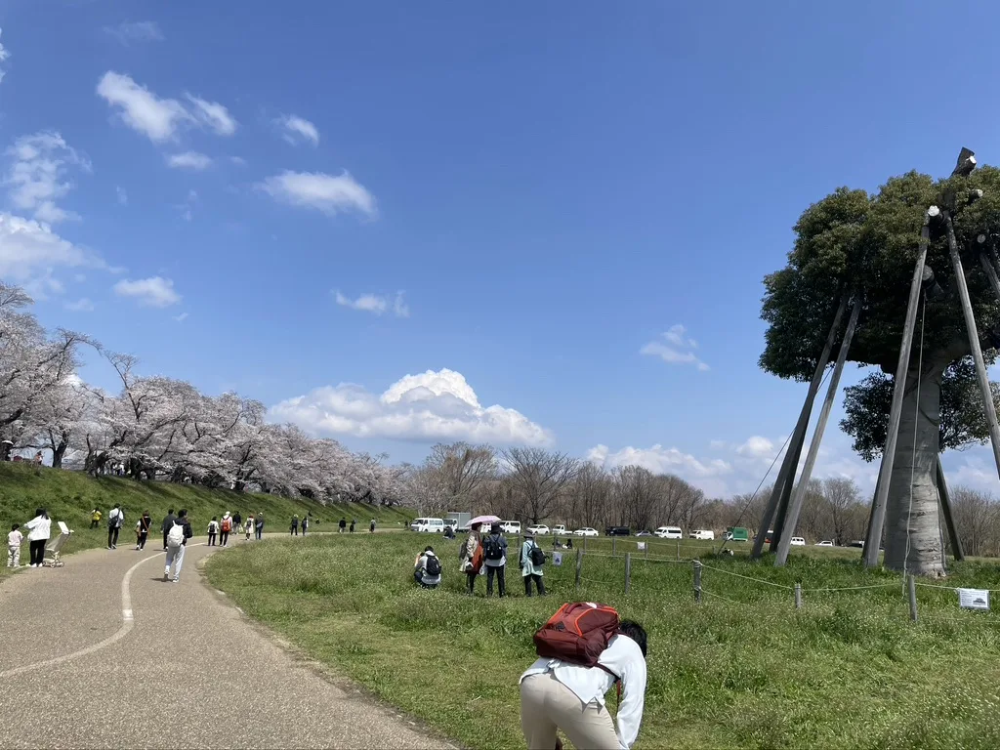
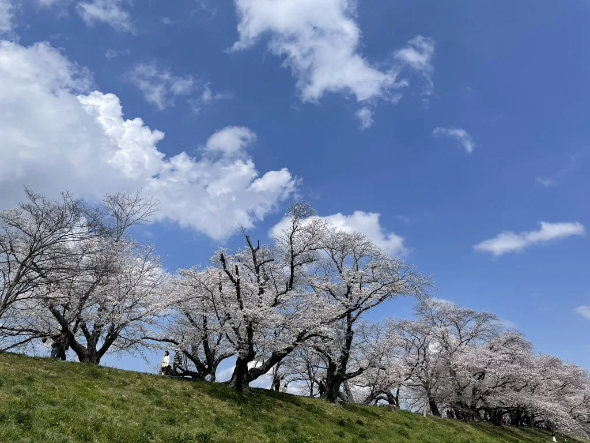

Most people visit Sewaritei during cherry blossom season.
And yes—it is spectacular.
Every spring, hundreds of cherry trees bloom along the riverside, creating a long canopy of pale pink blossoms.
But that is not the only reason we like this place.
What we love most is the feeling of space.
Wide open skies, gentle riverside paths, and a peaceful atmosphere make Sewaritei a lovely place to visit throughout the year.

During cherry blossom season, the riverside becomes lively with people walking, taking photographs, and enjoying picnics beneath the trees.
Even then, the broad riverbanks and open sky give the area a sense of freedom that feels very different from the narrow streets and busy temples of central Kyoto.

In summer, the riverbanks turn green and the open paths are pleasant for a slow walk.
Autumn brings quieter scenery, while winter offers a peaceful landscape with fewer visitors.
This is not simply a place to see cherry blossoms.
It is also a place where local people come to walk, relax, enjoy the outdoors, or simply spend a quiet afternoon.

If you have time after your walk, we also recommend visiting Iwashimizu Hachimangu Shrine, located nearby on Mount Otokoyama.
The historic shrine and its forested surroundings offer a completely different atmosphere from the open riverside landscape below.
Sewaritei and Iwashimizu Hachimangu make a wonderful half-day trip from The Showa House.
If you are staying with us for several nights, this is one of the places we would happily recommend— not only during cherry blossom season, but throughout the year.
Sometimes the best travel memories come from places where local people simply enjoy spending time.
Visitor Information
Location
Sewaritei, Yawata City, Kyoto
Access
Two train stops from The Showa House,
followed by a walk from Iwashimizu-hachimangu Station
Cherry blossom season
Usually from late March to early April,
depending on the weather each year
Nearby
Iwashimizu Hachimangu Shrine
Our recommendation
Worth visiting throughout the year,
even when the cherry blossoms are not in bloom